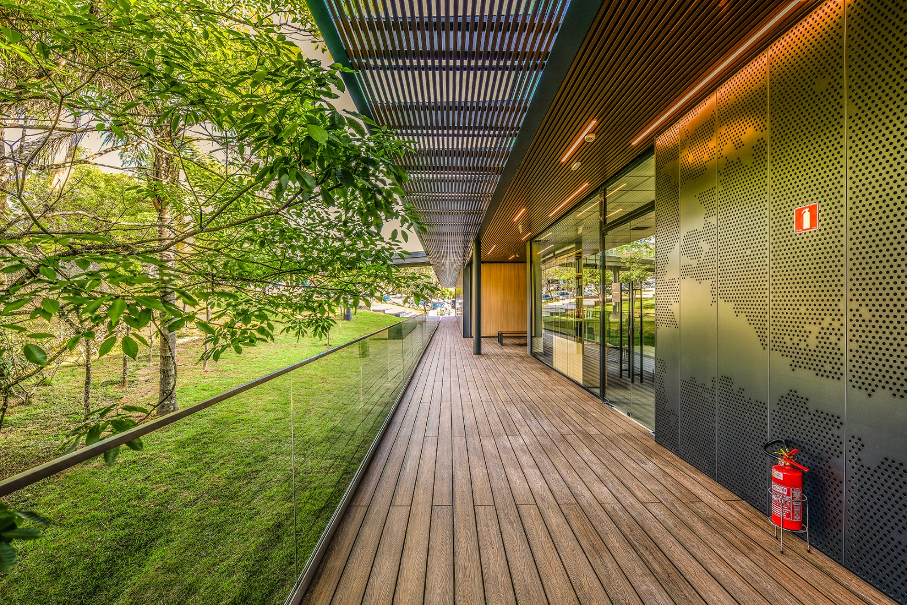
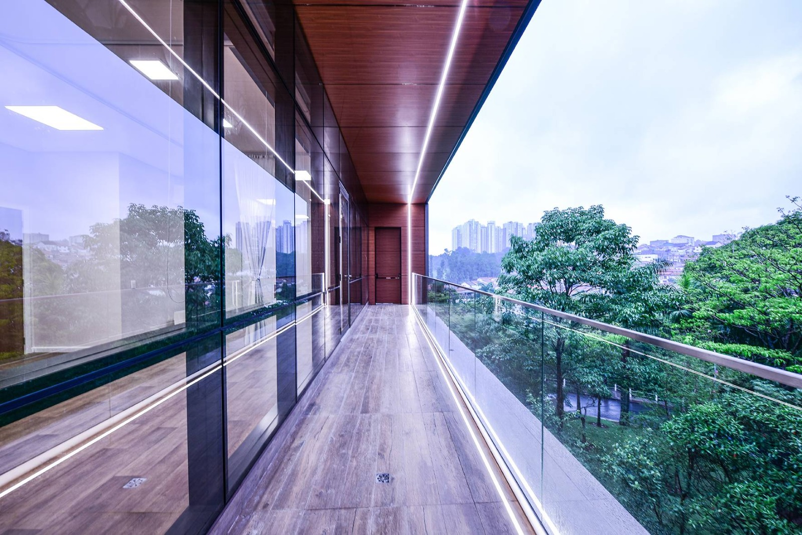
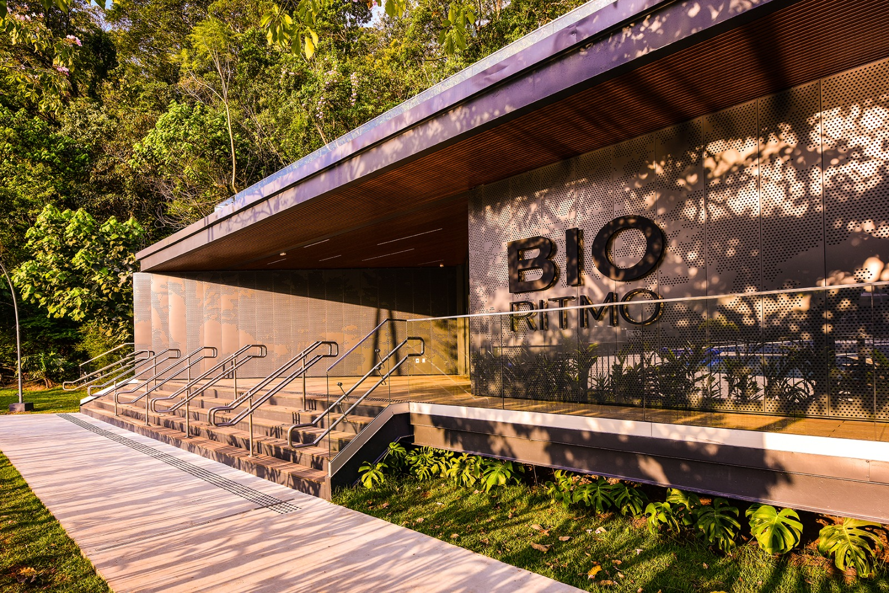
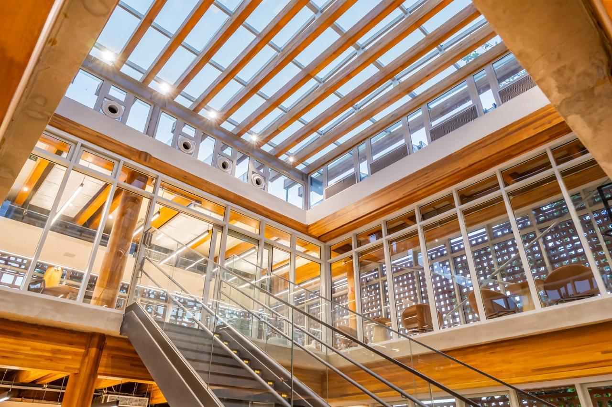
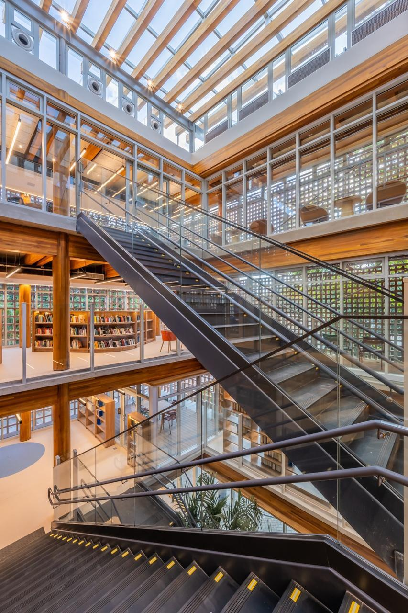
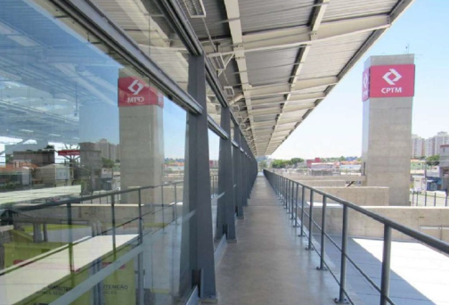
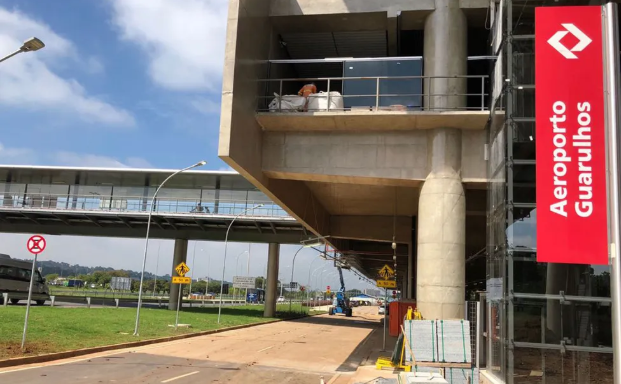

Guarda-corpo autoportante (perfil U)
Vidro temperado laminado travado em perfil de alumínio contínuo, sem colunas aparentes. Perfil embutido na laje ou aparente, com nivelamento por sapatas e drenagem prevista em detalhe.
Guarda-corpo de vidro · Parapeito · Sacadas e mezaninos
Projeto, memorial de cálculo, fabricação e montagem própria de guarda-corpos e parapeitos de vidro para construtoras, condomínios, engenheiros e arquitetos. Um único responsável técnico do detalhamento à entrega.
Escopo técnico
Vidro temperado laminado travado em perfil de alumínio contínuo, sem colunas aparentes. Perfil embutido na laje ou aparente, com nivelamento por sapatas e drenagem prevista em detalhe.
Placas de vidro apoiadas em conectores de aço inox AISI 316, com furação antes da têmpera, arruelas de vedação e torque controlado em campo.
Colunas em alumínio ou inox com presilhas de vidro, opção de corrimão superior em tubo redondo ou perfil laminado. Solução econômica para grandes metragens.
Modulação repetitiva por pavimento-tipo, paginação padronizada e liberação de medição por etapa. O sistema que o mercado também busca como parapeito de vidro.
Corrimão contínuo conforme NBR 9077, alturas e carregamentos das ABNT NBR 14718 e ABNT NBR 7199, com fixação lateral ou sobre o piso.
Troca de placas trincadas, reaperto de conexões e adequação à norma em edifícios ocupados, com plano de acesso, içamento e proteção de áreas.
Para quem compra por critério técnico
Dimensionamento conforme ABNT NBR 14718 (estrutura e instalação de guarda-corpos), ABNT NBR 7199 (vidros para segurança contra quedas) e ABNT NBR 6123 (pressão de vento): cargas concentradas, carga distribuída no corrimão e solicitações dinâmicas. ART, ISO 9001 e pranchas de detalhamento entregues no pacote da obra.
Especificação de interlayer PVB ou ionoplasto conforme aplicação, heat soak test para eliminar risco de quebra espontânea por inclusão de NiS e rastreabilidade placa a placa.
Perfil U, botões e buchas dimensionados por cálculo e validados com ensaio de arrancamento na laje real da obra antes da liberação da montagem.
Equipe própria com NR-35 e NR-18, içamento e proteção de borda, diário de obra alinhado ao cronograma da construtora e termo de garantia na entrega.
Business cases
Obras entregues em complexos corporativos, hospitais, escolas e estações — com memorial de cálculo e montagem própria.

Guarda-corpos de vidro com corrimão em aço inox nas escadas externas, passarelas e circulações do complexo corporativo
Montagem por etapas com o edifício em plena operação

SaúdeGuarda-corpo autoportante com corrimão superior em inox e iluminação LED embutida no perfil
Acabamento e limpeza técnica compatíveis com ambiente hospitalar

WellnessGuarda-corpo de vidro e corrimões duplos em aço inox na escadaria de acesso e platô de chegada
Ferragens AISI 316 especificadas para área externa e jardim

Educação
Guarda-corpos de vidro com corrimão metálico nas escadas, rampas e mezaninos do átrio central
Alturas e carregamentos conforme NBR 14718 para grande fluxo de alunos

MobilidadeGuarda-corpos e parapeitos de vidro em mezaninos, plataformas e circulações de estação
Montagem em janela noturna, sem interrupção da operação ferroviária

MobilidadeGuarda-corpo de vidro e corrimão em aço inox nas passarelas de acesso e plataformas da estação aeroportuária
Especificação para alto fluxo de passageiros com bagagens e carrinhos
Portfólio completo
Mais de 30 obras de guarda-corpo e parapeito disponíveis para o seu departamento de engenharia.
Do briefing à entrega
Recebemos plantas, cortes e fotos do local pelo WhatsApp ou e-mail e alinhamos escopo, sistema construtivo e restrições do canteiro.
Enviamos proposta com sistema de fixação, especificação de vidro e ferragens, premissas de cálculo e cronograma físico de medição e montagem.
Detalhamento executivo aprovado, medição em obra, fabricação controlada com heat soak e inspeção de lote antes do envio.
Montagem por equipe própria, torque e alinhamento conferidos em campo, limpeza técnica e termo de garantia com plano de manutenção.
Dúvidas técnicas frequentes
Sim. Parapeito é o termo técnico de projeto para o guarda-corpo que protege sacadas, coberturas e bordas de laje. Nos dois casos, executamos o mesmo sistema de envidraçamento de proteção, dimensionado por norma.
Vidro temperado laminado, com espessura e interlayer definidos por cálculo — usualmente 8+8 mm ou 10+10 mm — conforme ABNT NBR 7199 e ABNT NBR 14718. Indicamos heat soak test para eliminar quebra espontânea.
Sim. Todo guarda-corpo é assinado por engenheiro responsável, com ART, ISO 9001 e memorial entregues no pacote de documentação da obra ou do condomínio.
Sim. Substituímos placas trincadas, reapertamos conexões e adequamos sistemas antigos à norma vigente, com plano de acesso e proteção das áreas comuns.
Com plantas ou medidas em mãos, retornamos a proposta técnica em até 5 dias úteis; pré-estimativa de verba em 48 horas.
Envie plantas, cortes e o prazo da obra. Retornamos com pré-estimativa de verba em 48 horas e proposta técnica completa em até 5 dias úteis.